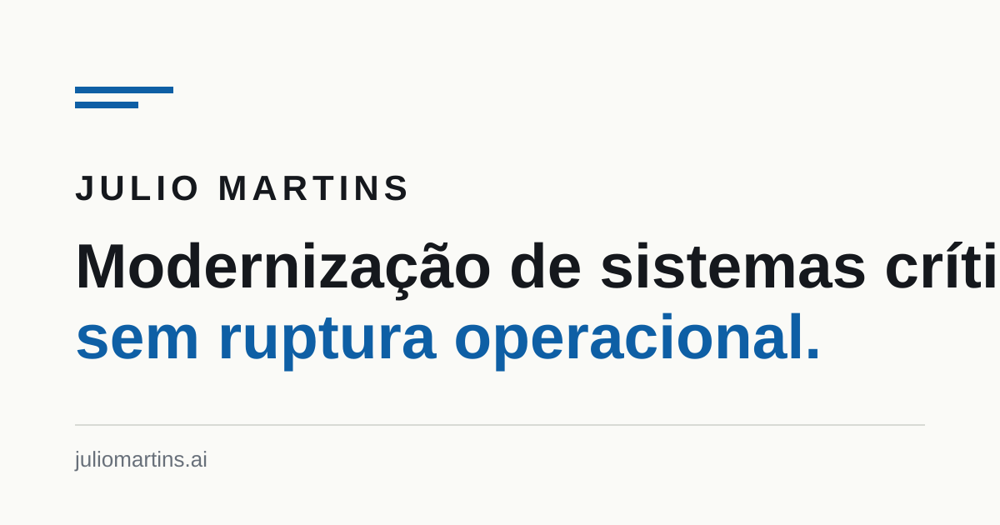

Um bom artigo começa por uma observação concreta. Este parágrafo abre o argumento e situa uma decisão, uma restrição ou uma consequência operacional que importa para quem está lendo.
Subtítulo de primeiro nível
Use negrito com parcimônia para destacar o que precisa sobreviver à leitura rápida. Em textos sobre sistemas críticos, clareza vale mais do que intensidade retórica.
Subtítulo de segundo nível
Parágrafos curtos preservam ritmo. A largura de leitura desta página foi desenhada para aproximadamente 65 caracteres por linha.
- Exemplo de item em lista sem ordem.
- Outro ponto, com informação verificável e direta.
- Exemplo de item em lista ordenada.
- Uma sequência que explica dependências ou etapas.
“Uma citação deve sintetizar um ponto de vista, uma decisão ou uma evidência — não apenas ocupar espaço.”

Quando código é evidência
Use código curto dentro do parágrafo para nomes de conceitos, comandos ou estruturas. Para exemplos maiores, use o bloco abaixo.
# Exemplo de bloco de código
def criterio_de_virada(equivalencia_comprovada, operacao_estavel):
return equivalencia_comprovada and operacao_estavelUma tabela quando a comparação ajuda
| Decisão | Critério | Efeito |
|---|---|---|
| Escrita dupla | Equivalência verificável | Virada com risco controlado |
| Migração progressiva | Operação preservada | Aprendizado antes da escala |
Encerramento
Feche o artigo com a implicação da ideia para a operação, para a decisão de negócio ou para o próximo passo. Evite repetir o título; avance a conversa.